Three very game birds, a stop at Invercargill by a road sign to Bluff (both of us holding wine bottles - I can't quite remember why we did this!), on to the Florence Hill Lookout with spectacular views of the sweeping arc of Tautuku Bay, and the odd Teapot Museum at Owaka (pop.395) where visitors are literally 'pouring' in to see the exhibits ...
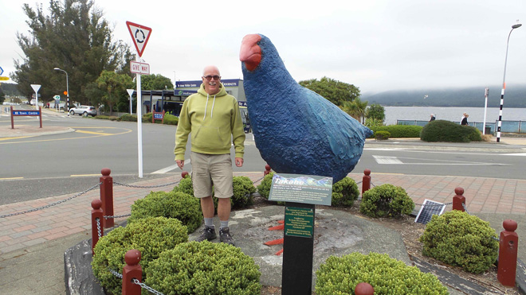
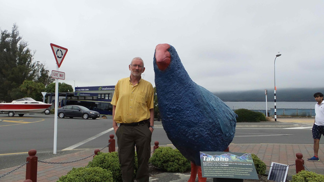
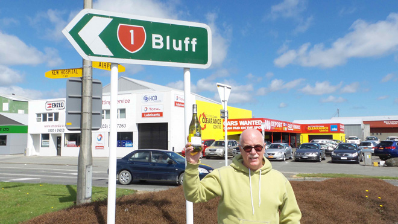
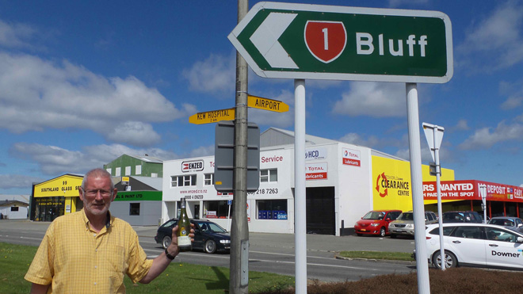
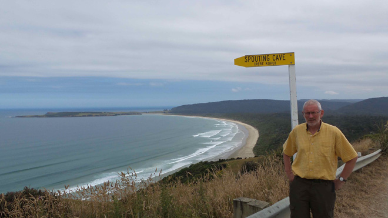
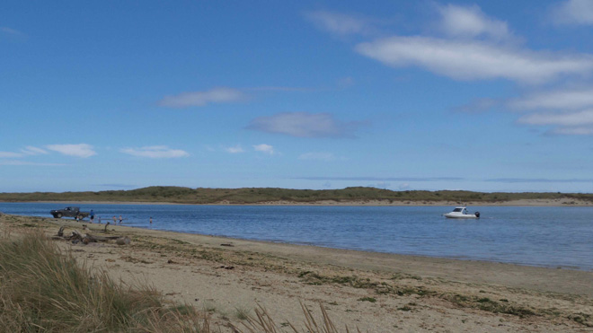
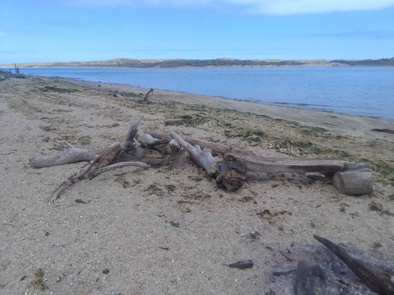
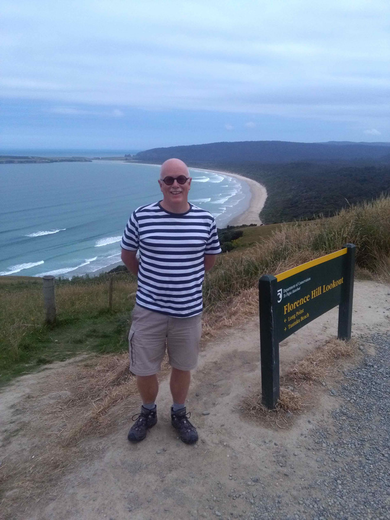
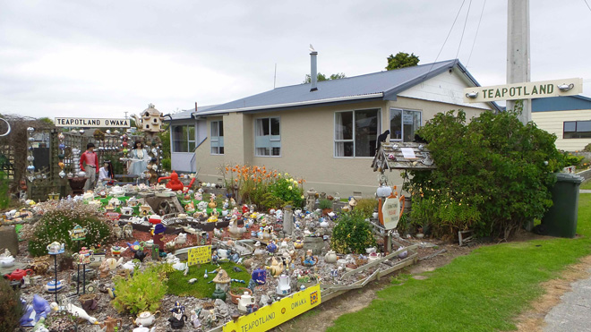
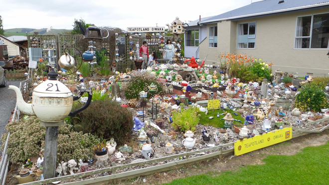
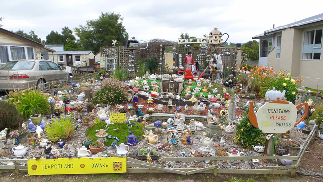